Врачи, проводящие LASIK, любят хвастаться количеством проведенных ими так называемых "успешных" операций, но они не хотят говорить о своих неудачах. Здесь вы можете прочитать о некоторых "неудачных" случаях, которые в противном случае никогда бы не стали известны.
Хирурги LASIK любят утверждать, что, если вы не достигли ожидаемого хирургического результата, вы всегда можете провести повторную операцию, чтобы "улучшить" свои результаты. Но мы слышали от сотен пациентов, чье зрение продолжало ухудшаться с каждой последующей операцией. Мы называем это эффект домино от ненужной операции на глазу .
Проблемы, связанные с LASIK? Отправьте отчет о медицинском наблюдении с Управлением по санитарному надзору за качеством пищевых продуктов и медикаментов. Ознакомьтесь с образцом Отчеты LASIK MedWatch в настоящее время находится на рассмотрении в FDA.
Изображения на этой странице любезно предоставлены доктором Эдвардом Бошником. Доктор Бошник посвятил свою практику восстановлению комфорта и качественное зрение после операции LASIK и другие формы рефракционная хирургия глаза .
Женщина на фотографии ниже перенесла операцию LASIK в 2006 году. Примерно через год у нее развился эктазия после операции LASIK на обоих глазах. В 2008 году, в попытке исправить деформацию роговицы, она перенесла еще одну рефракционную хирургическую процедуру, известную как КК (кондуктивная кератопластика). В марте 2014 года правый роговичный лоскут LASIK был смещен, и в роговице образовалась перфорация. Неотложная помощь пересадка роговицы была проведена операция по восстановлению зрения. Чтобы предотвратить отторжение трансплантата роговицы, пациентке были назначены стероидные капли, которые вызвали резкий скачок внутриглазного давления в правом глазу более чем на 50 мм рт.ст. Для снижения давления в глаз хирургическим путем был вставлен шунт. Хотя ее внутриглазное давление было снижено до нормального уровня, зрительному нерву был нанесен необратимый ущерб. Сейчас она слепа на правый глаз. Этот случай является примером того, что мы называем эффект домино от ненужной рефракционной хирургии .
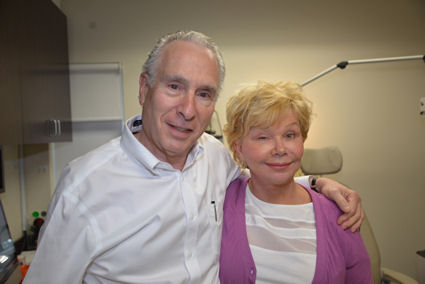
На рисунке ниже представлен снимок глаза пациента, перенесшего операцию по удалению RK в 1980-х годах, за которой последовала операция LASIK в 2003 году. В 2014 году пациентка внезапно потеряла зрение на левом глазу из-за эктазии роговицы. Внутриглазное давление, оказываемое на истонченную, ослабленную стенку роговицы, привело к разрыву внутренней оболочки роговицы (десцеметовой мембраны). На этом изображении, сделанном с помощью оптической когерентной томографии (ОКТ), вы можете видеть разрыв мембраны, обведенный красным кружком. Когда произошел разрыв, жидкость из глаза попала в роговицу, в результате чего роговица затуманилась, а зрение в этом глазу стало очень нечетким. Это состояние известно как "водянка". Вы заметите, что над роговицей находится склеральная линза, представленная двумя тонкими полупараллельными линзами. Назначение склеральной линзы - обеспечить зрение и защитить поврежденную ткань роговицы.
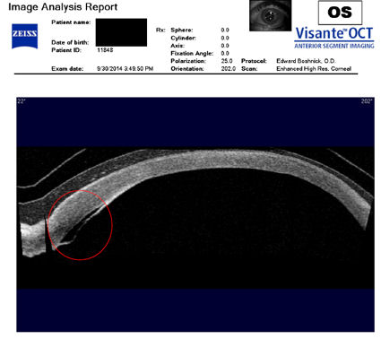
На изображении слева внизу представлен трехмерный снимок правой роговицы пациента, прошедшего процедуру LASIK. До проведения процедуры у этого пациента была близорукость -18 диоптрий. После операции у него развилась эктазия роговицы . На рисунке справа внизу показана здоровая неоперированная роговица для сравнения. Зрение пациента можно скорректировать до 20/40 только с помощью дорогих специальных жестких контактных линз. Без линз пациент не может функционировать. К сожалению, у этого пациента также развилась глаукома на обоих глазах. В результате этой ненужной операции пациент потерял зрение и потерял работу. Вскоре после этого его жена подала на развод. В настоящее время он безработный, и ему с трудом удается оплачивать лечение глаз.
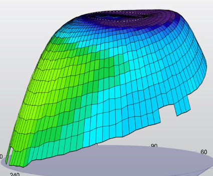
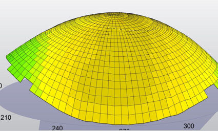
На рисунке ниже показаны визуальные искажения пациента, который первоначально перенес Хирургия РК при миопии на 10 диоптрий. После неудачной первой операции пациенту была проведена дополнительная операция RK, за которой последовали 2 операции LASIK на каждом глазу. "Имитация изображения" (верхняя часть изображения) иллюстрирует, как пациент видит глазную диаграмму. На рисунке "Кольца" (нижняя часть) показано, как лучи света отклоняются от идеально круглых концентрических колец, которые вы могли бы видеть обычным глазом. Щелкните изображение, чтобы увеличить.
На рисунке ниже показано сильно искаженное зрение пациента, перенесшего операцию LASIK в 2001 году. Два года спустя у него развился эктазия роговицы и был оставлен своим хирургом. Без специальных жестких контактных линз этот пациент не может функционировать. Нажмите на изображение, чтобы увеличить.
На фотографии ниже представлен глаз пациентки, перенесшей операцию LASIK в 2004 году. У нее развился эктазия пару лет спустя, что привело к необходимости в пересадка роговицы . Она перенесла несколько операций по пересадке роговицы, но все они были неудачными. Последняя пересадка привела к КАЛЬЦИФИКАЦИОННОЙ КЕРАТОПАТИИ. Пациентка отказалась от дальнейших операций. Нажмите на фото, чтобы увеличить.
На фотографии ниже представлен глаз пациента, перенесшего операцию LASIK в 2003 году. Край лоскута LASIK все еще виден на этой фотографии 2012 года, демонстрирующей неспособность лоскута к заживлению У пациента есть болезнь сухого глаза , которые проявляются в виде сухих пятен на роговице. (Для освещения поврежденных тканей после закапывания зеленого красителя в глаз используется специальный свет). Небольшие, плохо очерченные овальные или круглые участки чуть ниже лоскута LASIK между 11:00 и 1:00 - это врастание эпителия У пациента также есть эктазия после операции LASIK Нажмите на фотографию, чтобы увеличить ее.
На фотографии ниже представлен глаз пациента, у которого было 2 Операции в РК затем последовали 2 операции LASIK. Повторные операции LASIK привели к врастание эпителия , что потребовало 2 дополнительных операций по подтяжке лоскута. Впоследствии у пациентки развился травматический катаракта , что привело к необходимости операции по удалению катаракты. Этот случай является примером "эффекта домино", связанного с ненужными операциями на глазах. Нажмите на фотографию, чтобы увеличить.
На трех изображениях ниже показан глаз спустя 22 года после лучевая кератотомия (РК) хирургия. Хорошо известно, что роговица не способна к полному заживлению - вместо этого в ответ на повреждение образуется рубцовая ткань, которая видна на этих фотографиях. Хирург сделал надрезы такой длины, что они выходят за пределы поля зрения пациента, создавая размытость и визуальные искажения. Зрение пациента невозможно скорректировать даже с помощью специальных жестких линз. Второе изображение в серии - это фотография, сделанная после того, как в глаз был закапан зеленый краситель. Краситель попал во все еще открытые незажившие разрезы на коже. Третье изображение представляет собой топографию роговицы, на которой видна крайне неправильная форма поверхности роговицы (индуцированный неправильный астигматизм). Нажмите на изображение, чтобы увеличить.
Глаз, изображенный на фотографии ниже, был подвергнут кондуктивной кератопластике (КК) в попытке исправить зрение пациента после сверхкоррекции LASIK. До этих операций у пациента было отличное зрение в очках. Сейчас у пациента крайне нечеткое и искаженное зрение, которое невозможно исправить с помощью очков. Нажмите на фотографию, чтобы увеличить.
КК был введен для лечения дальнозоркости. КК использует иглоподобный зонд для доставки радиочастотной энергии (тепла) к коллагену периферической части роговицы в кольце индивидуально расположенных точек. Нагревание приводит к сокращению коллагена роговицы, что приводит к утолщению центральной части роговицы. Ниже вы можете четко видеть восемь точек, расположенных кольцом вокруг роговицы, в которые были введены зонды для КФК. Красная стрелка указывает на одно из мест КФК. Сразу за кольцом СК-пятен находится край лоскута LASIK, обозначенный белой стрелкой. Такие повреждения роговицы никогда полностью не заживают.
На фотографии ниже показан глаз пациента, у которого был РК (радиальная кератотомия) в 1988 году, а пятнадцать лет спустя, в 2003 году, была проведена операция LASIK. Белая стрелка указывает на один из незаживших разрезов RK (радиальные линии). Красная стрелка указывает на незаживший край лоскута LASIK. Зрение пациента сильно искажено. Нажмите на фотографию, чтобы увеличить.
На фотографии ниже показаны серьезные сухие глаза у пациента, перенесшего операцию LASIK с последующим ФРК . Красная стрелка указывает на край лоскута LASIK. В глаз был закапан зеленый краситель, который выделяет участки поражения поверхности и потерю поверхностных клеток (эпителия). Белая стрелка на этой фотографии указывает на большой сухой область роговицы, которая выглядит как скопление пятен. Нажмите на фотографию, чтобы увеличить.
На четырех изображениях ниже представлены фотографии глаза пациента, у которого был Лучевая кератотомия (РК) операция, за которой позже последовала LASIK. Повреждения, оставленные этими ненужными операциями, привели к пересадка роговицы Обратите внимание на многочисленные кровеносные сосуды, уходящие глубоко в роговицу. Здоровая роговица не имеет кровеносных сосудов. Это состояние, угрожающее зрению, называется неоваскуляризацией роговицы. Если присмотреться, можно увидеть шрамы от операции по удалению роговицы. Вдоль этих шрамов кровеносные сосуды проникли в роговицу. Нажмите на фотографии, чтобы увеличить.
На изображении слева внизу изображен другой снимок того же глаза, сделанный другой камерой. Вы можете видеть четко очерченные кровеносные сосуды по всей роговице. На этих снимках видны границы пересаженной ткани. (Пациент носит жесткие контактные линзы большого диаметра, которые видны на белке глаза.) Справа внизу та же фотография, которая была отредактирована, чтобы выделить кровеносные сосуды и края трансплантата. Нажмите, чтобы увеличить.
Отзыв пациента - 3 операции RK, за которыми последовал LASIK
Отзыв пациента - RK, LASIK, Эктазия
История этой пациентки - пример эффекта домино от ненужной операции на глазу. У нее был Хирургия РК в середине 90-х годов. Некоторое время спустя ее зрение начало ухудшаться, но очки не могли исправить неправильный астигматизм, вызванный RK. Поэтому пациентка согласилась пройти процедуру LASIK, которая не помогла и привела к эктазия роговицы .
На двух изображениях ниже изображен один и тот же глаз при разном освещении. У пациента был Хирургия РК в 1990 году. У него ухудшилось зрение, и в 2001 году ему было рекомендовано пройти операцию LASIK. В течение года после операции у пациента развился эктазия роговицы Обратите внимание, что после стольких лет разрезы на коже все еще открыты и, вероятно, останутся открытыми до конца его жизни.
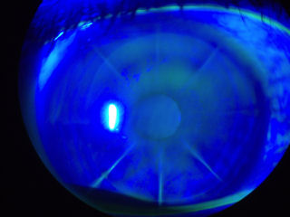
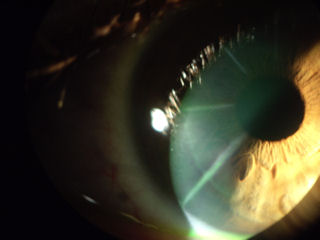
На фотографии ниже представлена роговица после операции LASIK с врастание эпителия , эктазия , и ПОТРЕБЛЯЕМЫЕ ВЕЩЕСТВА .
В 2005 году пациенту была проведена операция LASIK. Несколько лет спустя у него развилась эктазия и он начал терять зрение на правом глазу. В 2008 году он перенес две отдельные процедуры по лечению эктазии -- сшивание коллагена роговицы и имплантация пластиковой вставки под названием ПОТРЕБЛЯЕМЫЕ ВЕЩЕСТВА . Инородный предмет, расположенный по периметру роговицы, называется ИНТАКС. ИНТАКС предназначены для сглаживания выступа роговицы.
К сожалению, эти процедуры не привели к восстановлению качества и четкости зрения пациента. Наилучшая коррекция зрения с помощью очков на правом глазу - 20/40, без ореолов, бликов и двоения в глазах. В настоящее время пациент носит жесткие контактные линзы терапевтического действия. Линия milky, работающая с 7:00 до 8:00, - это врастание эпителия . Т-образный туманно-белый шрам в положении на 9:00 остается от разреза, который был сделан для введения INTACS в роговицу.
Нажмите на изображение, чтобы увеличить его.
На изображении ниже представлен поперечный снимок глаза с буллезной кератопатией после операции LASIK. Пациент носит склеральную контактную линзу. Буллезная кератопатия - это состояние, при котором роговица становится постоянно опухшей вследствие повреждения самого внутреннего слоя роговицы, эндотелия. Эндотелий действует как насос, удаляя жидкость из роговицы для поддержания ее прозрачности.
Красная стрелка указывает на хрусталик склеры. Зеленая стрелка указывает на пространство между хрусталиком и роговицей, заполненное физиологическим раствором или слезами. Желтая стрелка указывает на роговицу. Крайняя правая стрелка указывает на область буллезной кератопатии.
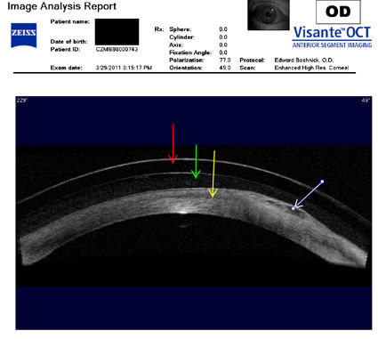
На двух изображениях ниже изображены левый и правый глаза пациента, у которого было два отдельных глаза. рк в 1992 году были проведены операции на каждом глазу, а в 2002 году - LASIK. Эти фотографии были сделаны с помощью щелевой лампы (биомикроскопа) после окрашивания глаза флуоресцеином. Синий свет используется для освещения участков окрашивания, которые указывают на повреждение роговицы. Обратите внимание, что разрезы RK и края лоскута LASIK окрашены в зелено-желтый цвет, что указывает на открытые раны.
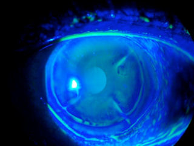
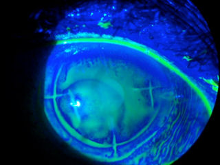
Следующие два изображения представляют собой топографию левого и правого глаза одного и того же пациента. Широкий спектр цветов отражает значительный неравномерный астигматизм и резко изменяющуюся преломляющую способность центральной части роговицы, что свидетельствует об очень плохом качестве зрения.
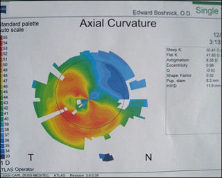
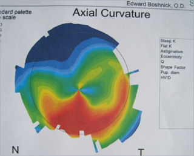
У пациента развился эктазия в результате таких операций. Эктазия возникает, когда роговица становится слишком слабой, чтобы сохранять свою форму, и выпячивается вперед (становится более крутой). Это состояние приводит к серьезным искажениям зрения и часто требует трансплантация роговицы Два хирурга, проводившие эти операции, и врач, направивший этого пациента на эти операции, ошибочно диагностировали эктазию роговицы после операции LASIK как кератоконус . Кератоконус - это генетическое заболевание роговицы, которое обычно развивается в подростковом возрасте, прогрессирует в течение следующего десятилетия или около того и, как правило, поражает оба глаза. Эктазия после рефракционной операции является прямым результатом хирургического ослабления роговицы. Симптомы кератоконуса и эктазии схожи - серьезное нарушение зрения, которое невозможно исправить с помощью очков. Ошибочные диагнозы, скорее всего, были поставлены с целью предотвратить судебный иск против врачей, ответственных за это глазное бедствие.
Пациентка прошла экспериментальную процедуру, известную как сшивание коллагеном роговицы, в попытке остановить прогрессирование эктазии. Процедура включает нанесение рибофлавина на поверхность глаза с последующим воздействием ультрафиолетового излучения для придания жесткости роговице. К сожалению, даже если эта процедура "успешно" останавливает прогрессирование заболевания, она не восстанавливает качество зрения до уровня, который был до операции. Следующим шагом для этого пациента является установка жестких линз.
На четырех изображениях ниже представлены фотографии и сканы правого глаза пациента, перенесшего два рк хирургических вмешательств и двух операций LASIK, а впоследствии разработанных эктазия , неоваскуляризация и стафилококковая инфекция. (Все четыре изображения можно увеличить, щелкнув на изображении.) На верхнем левом снимке красная стрелка указывает на лоскут LASIK, который никогда полностью не заживет. Две черные стрелки указывают на открытые разрезы, через которые кровеносные сосуды проникают в роговицу (неоваскуляризация). Это создает угрозу зрению. Глаз покраснел и налился кровью в результате стафилококковой инфекции. Следующие 3 изображения представляют собой сканы роговицы в поперечном сечении, на которых видны повреждения от разрезов и истончение, связанные с эктазией. Этот случай демонстрирует эффект домино от ненужной операции на глазу .
Отказ от ответственности: Информация, содержащаяся на этом веб-сайте, представлена с целью предупреждения людей об осложнениях процедуры LASIK перед операцией. Пациентам, у которых возникли проблемы с процедурой LASIK, следует обратиться за консультацией к врачу.